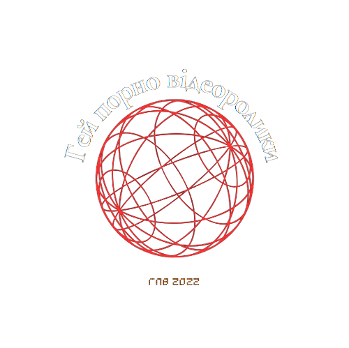

|  | Офіційний сайт спільноти ГПВ!тут ви побачите наші контакти, зможете прочитати історію ГПВ та багато іншого! |
07.05.2025
сайт оновлено.Про нас 
Коли Костянтин та Андрій, обидва багатообіцяючі молоді актори, зустрілися на кастингу для нового фільму, вони миттєво зрозуміли, що у них спільна мрія - грати в гей-фільмах.Особиста та професійна життя їх були середні, тому вони вирішили об'єднати свої сили, щоб втілити свою бажану гей-історію на великому екрані.
Марганець, молодий, талановитий режисер, також мріяв зняти гей-фільм, який допоміг би широкому загалу зрозуміти та прийняти сексуальну орієнтацію людей.
Коли він дізнався про амбітні плани Костянтина та Андрія, він одразу ж приєднався до команди, щоб допомогти їм зреалізувати їхнє бачення.
Троє головних героїв почали вивчати творчу сторону процесу зняття фільму та кастинг артистів з різних локалізацій, а також зустрілися зі спонсорами й інвесторами, щоб залучити фінансування для проекту.
Вони почали писати сценарій, змірювати реквізит, планувати зйомки та аналізувати можливості фестивалів та кінодистрибуції.
Попри великі виклики, Костянтин, Андрій та Марганець не здавалися. Їхня ентузіазм та наполеглива праця привели їх до успіху.
Під керівництвом Марганця, вони зняли фільм, який вразив глядачів своєю емоційною силою та чутливим підходом до теми гомосексуальності.
Фільм отримав багато похвали та нагород, вплинувши на свідомість людей та сприяючи більшій прийнятності й розумінню різноманітності сексуальних орієнтацій.
Історія Марганця, Костянтина та Андрія стала великим вкладом у світ кінематографу, демонструючи важливість розширення репертуару і перспективи розповідей, які торкаються складних соціальних тем та проблем.
Їхня праця сприяла зростанню толерантності і взаєморозумінню у суспільстві.
Хронологія подій
Розділ 1: Зустріч
Коли Костянтин та Андрій вперше побачили один одного на кастингу, між ними відразу виникло щось особливе. Обидва були молодими, харизматичними, і кожен мріяв про велике кіно. Але не будь-яке кіно — вони хотіли зніматися у фільмах, які розповідають про справжні почуття, про те, що часто залишається поза кадром — гей-історії, що викликають співчуття й розуміння.
Після прослуховування, вони затрималися в коридорі театру, де вперше поділилися своїми мріями. Того вечора, у маленькому кафе на Подолі, народилася ідея, яка змінить їхнє життя.
Розділ 2: Режисер мрії
Невдовзі вони познайомилися з Марганцем — молодим, але вже відомим у вузьких колах режисером. Його короткометражка про прийняття себе отримала приз на фестивалі незалежного кіно в Берліні. Коли він почув, над чим працюють хлопці, його очі загорілися.
— Ми зробимо це, — сказав він. — Не просто фільм. Ми знімемо історію, яка змусить людей плакати, думати й змінюватися.
Так утворилася команда. Троє різних людей, але з однією метою.
Розділ 3: Початок шляху
Вони почали з малого — орендували офіс у старій київській будівлі, завалений сценарними чорновиками, розкадровками та ідеями. Кожен день був схожий на міні-виклик: вибір теми, написання сцен, пошук акторів, зустрічі зі спонсорами.
Не всі вірили в них. Дехто казав, що така тема «не на часі», інші відмовлялися фінансувати «ризиковане кіно». Але їхня віра була міцнішою за страх.
Розділ 4: Знімальний майданчик
Після кількох місяців підготовки — старт зйомок. Кожен кадр продумували до дрібниць, кожну сцену проживали з душею. Актори, яких вони обрали, не просто грали — вони відкривалися на екрані, як люди.
У найважчі моменти — коли техніка ламалася, коли не було грошей на локації, — саме дружба тримала команду на плаву. Їх об'єднувало не лише мистецтво, а й щира турбота одне про одного.
Розділ 5: Прем’єра
Прем’єра відбулася на кінофестивалі в Одесі. Зал був повний, серця билися швидко. Коли закінчилися титри, запанувала тиша... а потім — овації. Люди плакали, обіймалися, дякували.
Фільм отримав визнання. Але головне — він змінив ставлення. Він став голосом тих, хто довго мовчав.
Розділ 6: Спадщина
Фільм Костянтина, Андрія та Марганця став не просто подією, а рухом. Їхню історію включили в програми кіношкіл, вона обговорювалась у соцмережах, про неї писали в медіа.
Але вони не зупинилися. Попереду були нові проєкти, нові історії — бо мистецтво, яке торкається серця, завжди має продовження.
Ігровий куточок
 Ігри за авторством
Ігри за авторствомІгрова діяльність ГПВ студії, яка може зацікавити вас та ваших друзів.